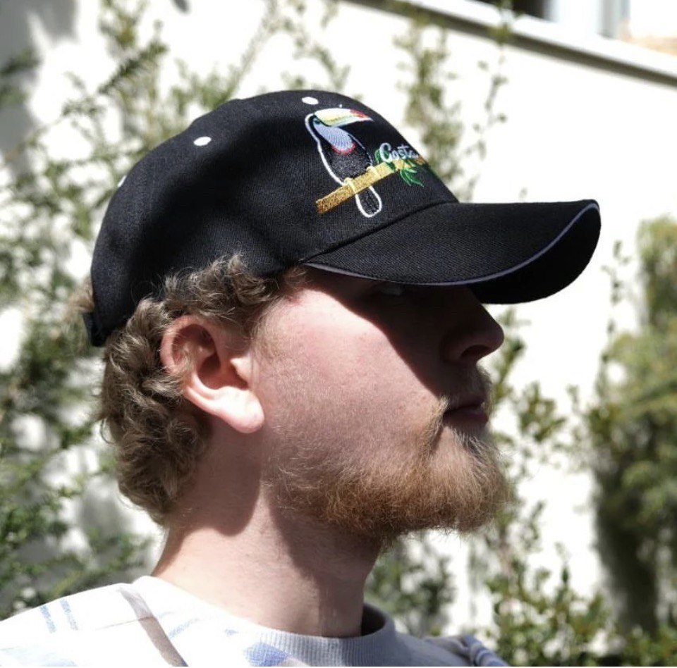

Welcome to my personal website.

Welcome, my name is Baptiste Zigmann (Male, 20) and I’m a computer science student at the Institut of technologie in Karlsruhe (KIT).
I’m French and German, my language knowledge at a native or good level is: French, German and English.
I graduated highschool in France at the age of 18 at the CIV (Centre international de valbonne) where I got the opportunity to get my Baccalauréat (French graduation) and my Abitur (German graduation) thanks to the OIB program.
Since then I have been trying to be the most active possible in skill and knowledge acquirement throughout internships or self thought.
Please visit my other website sections for more information. To do so I invite you to discover the exploration menu located on the top right of this page.